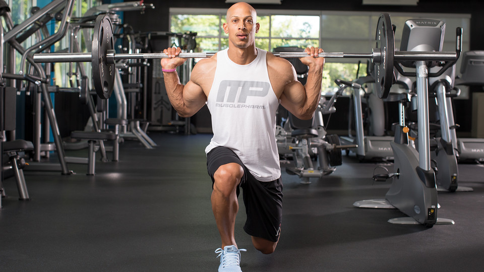

Massive, defined quads deserve a workout all their own, which is exactly what MusclePharm-sponsored athlete Larry Edwards delivers in this killer quad workout.
If you've ever struggled to build your legs, you know one leg day a week is not going to cut it. You also know it takes high volume and high intensity to push those wheels to grow.
MusclePharm-sponsored athlete Larry Edwards is not shy when it comes to high-volume workouts, which is why he's here to share his brutal quads-only workout for building muscle where it counts.
"The goal of today's quad workout is to build muscle," explains Edwards. "The workout is based on high volume, high intensity, a lot of reps. My body seems to respond to it, and I'm sure yours will too."
The purpose of this first round is to pump as much blood into the quads as possible. Start off at 30 reps, then drop to 27. Then do 2 sets at 25 reps, 2 sets at 20 reps, 2 sets at 15 reps, 2 sets at 12 reps, and 1 set at 10 reps. All told, you'll do 10 sets.
"Obviously, you're not going to do a ton of weight doing this many reps," says Edwards. "You want to get good contractions at the top of each rep. At the end you'll feel a lot of blood volume, a lot of pump in your quads."
Using a narrow stance puts the emphasis on the quads, so Edwards positions his heels at the bottom of the board and keeps his stance inside shoulder width, keeping his knees behind his toes as he moves the weight.
"When I'm doing the walking lunges, I don't focus as much on the reps," says Edwards. "Instead, I focus on distance." For these lunges, you'll complete 25 yards on the first 2 sets, 20 on the next 2 sets, and 15 on the final 2 sets. Edwards prefers to lunge with a barbell on his back, but dumbbells work, too. Keep your chest up and stop just before your knee hits the ground. Stay upright, and drop straight down with each step. Come straight up before moving forward. Although it's tempting when covering distance rather than counting reps, don't take too big of a lunge. To emphasize the quads, the smaller the step, the better.
Back to leg extensions. "The first time I do leg extensions, the focus is to pump up the quads and get them ready for a total quad day," says Edwards. "This time, I use a heavier weight just to really get every muscle fiber left in the quads firing."